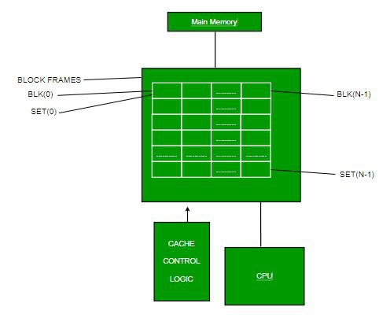

3. Set Associative Mapping
Compromised to show the strengths of both the direct & associative mapping
Cache is divided into a number of sets
Each set contains a number of lines
A given block maps to any line in a given set
